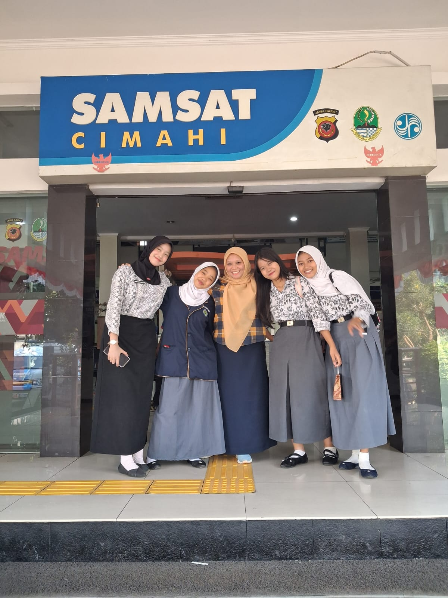

🏢 SAMSAT CIMAHI 🏢
Portal Informasi & Sistem Penjadwalan Praktik Kerja Lapangan (PKL)
Pengenalan SAMSAT Cimahi

🏢 Gedung Kantor SAMSAT Cimahi - Jawa Barat
📖 Apa Itu SAMSAT?
SAMSAT merupakan singkatan dari Sistem Administrasi Manunggal Satu Atap. SAMSAT diatur oleh Peraturan Presiden (PP) No. 5 Tahun 2015 tentang Penyelenggaraan SAMSAT. SAMSAT merupakan rangkaian sistem yang berfungsi untuk menyelenggarakan beberapa tugas seperti Registrasi dan Identifikasi Kendaraan Bermotor (Regiden Ranmor) hingga pembayaran Sumbangan Wajib Dana Kecelakaan Lalu Lintas dan Angkutan Jalan (SWDKLLJ).
🏛️ Tiga Instansi Pelaksana SAMSAT
SAMSAT terdiri dari tiga instansi pelaksana terpadu yang bekerja secara bersinergi:
Dinas Pendapatan Daerah
Bertanggung jawab terhadap pengelolaan Pajak Kendaraan Bermotor (PKB).
Ditlantas Polda
Menjalankan tugas Registrasi dan Identifikasi Kendaraan Bermotor (Regiden Ranmor).
PT Jasa Raharja
Bertugas mengelola Sumbangan Wajib Dana Kecelakaan Lalu Lintas dan Angkutan Jalan (SWDKLLJ).
Sejarah SAMSAT & SAMSAT Cimahi
Konsep pelayanan terpadu SAMSAT dibentuk pertama kali pada tahun 1977 di Indonesia untuk mempermudah masyarakat dalam mengurus dokumen kendaraan tanpa harus mendatangi kantor instansi yang berbeda-beda secara terpisah.
SAMSAT Cimahi - Jawa Barat hadir sebagai bentuk pelayanan publik dengan menerapkan konsep pelayanan publik terpadu. Bersebelahan dan terintegrasi dengan perkembangan Kota Cimahi, SAMSAT Cimahi secara konsisten memberikan kemudahan layanan melalui integrasi teknologi, fasilitas yang ramah masyarakat, serta pembimbingan bagi generasi muda siswa PKL/Magang untuk belajar tentang administrasi pemerintahan.
Jadwal Operasional & Jam Kerja PKL
🏛️ Jam Buka - Tutup SAMSAT
| Hari | Jam Pelayanan |
|---|---|
| Senin - Jumat | 08.00 - 14.00 WIB |
| Sabtu | 08.00 - 11.00 WIB |
| Minggu / Libur | TUTUP |
👨💻 Jam Masuk & Pulang Siswa PKL
- Siswa PKL wajib hadir pukul 07.30 WIB (30 menit sebelum layanan dibuka).
- Jam kepulangan PKL adalah pukul 15.00 WIB setelah rekapitulasi berkas harian selesai.
Jadwal Bagian Siswa PKL (September 2026)

📸 Foto Kebersamaan Siswa PKL di Depan Gedung SAMSAT Cimahi
| Hari / Tanggal | Bagian Fiskal 🖥️🖨️ (Bu Ade) |
Bagian Antar Berkas 📑📄 (Pak Iyan) |
|---|---|---|
| Senin, 19 Oktober 2026 | Nadia | Nabila |
| Selasa, 20 Oktober 2026 | Nabila | Nadia |
| Rabu, 21 Oktober 2026 | Selva | Nabila |
| Kamis, 22 Oktober 2026 | Nadia | Nabila |
| Jum'at, 23 Oktober 2026 | Nabila | Nadia |
| Sabtu, 24 Oktober 2026 | Selva | Nadia |
Alamat Lokasi & Kontak Resmi
💡 Lokasi SAMSAT Cimahi
Alamat Lengkap:
Jalan Raya Cibabat No. 331 A, Cigugur Tengah, Kec. Cimahi Tengah, Kota Cimahi, Jawa Barat 40522, Indonesia.
📞 Telepon & WhatsApp
Telepon Kantor: (022) 7566197
Layanan WhatsApp / Hotline: -